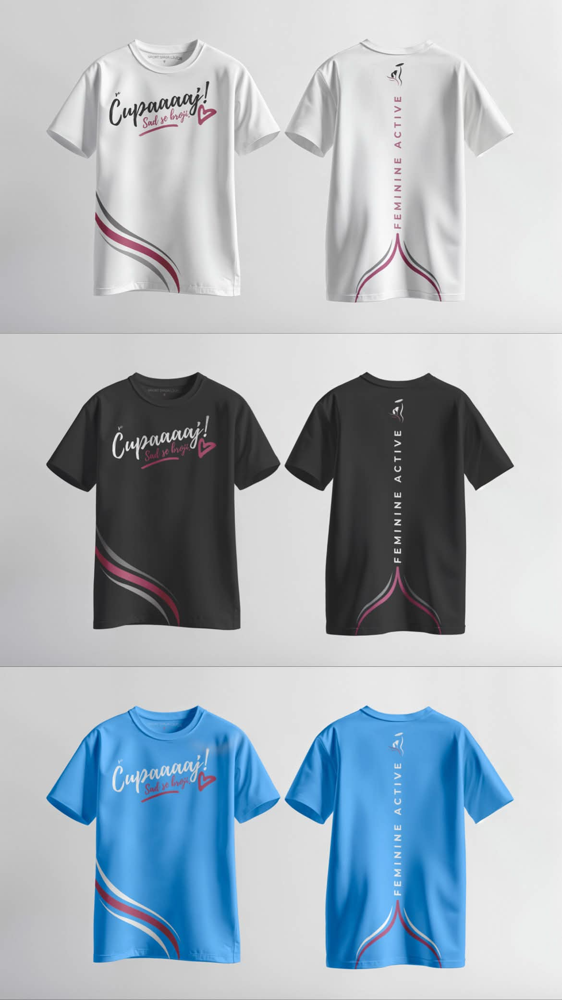
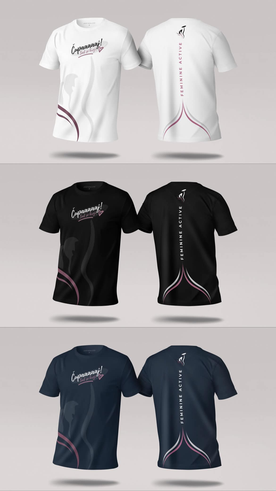
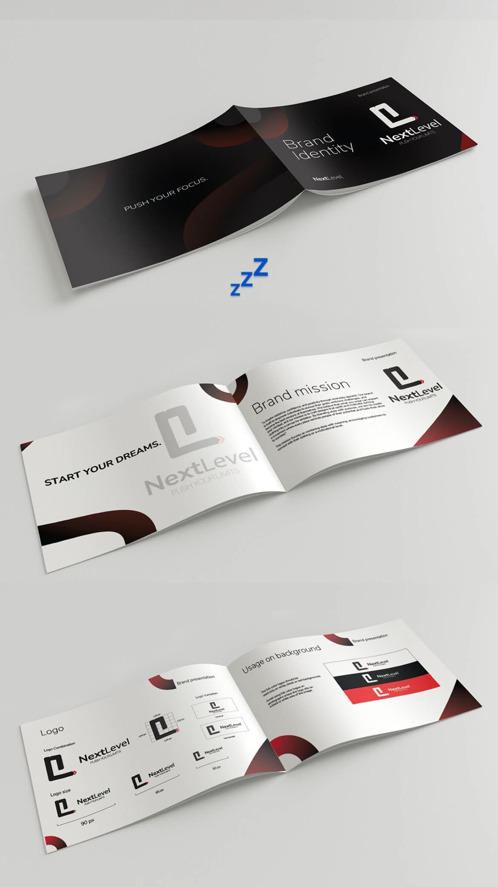

DesignDizajn
Apparel & Merchandise DesignDizajn odjeće i proizvoda
A collection of apparel designs featuring custom T-shirt graphics and promotional materials. The project combines creative concepts, distinctive typography, and carefully arranged visual elements to create unique designs and present them in a cohesive, professional style. Kolekcija dizajna za odjeću koja obuhvata grafike za majice i promotivne materijale. Projekat kombinuje kreativne ideje, prepoznatljivu tipografiju i pažljivo raspoređene vizuelne elemente kako bi kreirao jedinstvene dizajne i predstavio ih u usklađenom i profesionalnom stilu.


